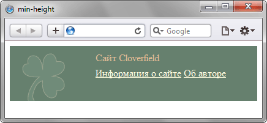

min-height
Задаёт минимальную высоту элемента. Значение высоты элемента будет вычисляться в зависимости от установленных значений свойств height, max-height и min-height. В табл. 1 показано, чем руководствуется браузер при совместном использовании указанных стилевых свойств.
| Значения свойств | Высота | ||||
|---|---|---|---|---|---|
| min-height | < | height | < | max-height | height |
| min-height | > | height | > | max-height | min-height |
| min-height | > | height | < | max-height | min-height |
| min-height | < | height | height | ||
| min-height | > | height | min-height | ||
| min-height | > | max-height | min-height | ||
| min-height | < | max-height | max-height | ||
Данные из таблицы следует понимать следующим образом. Если значение высоты (height) меньше значения min-height, то высота элемента принимается равной min-height.
Краткая информация
| Значение по умолчанию | 0 |
|---|---|
| Наследуется | Нет |
| Применяется | Ко всем элементам, кроме строчных и таблиц |
Синтаксис
min-height: <размер> | <проценты>Значения
В качестве значений принимаются пиксели (px), проценты (%) и другие единицы измерения, принятые в CSS. Отрицательные значения не допускаются.
Пример
<!DOCTYPE html>
<html>
<head>
<meta charset="utf-8">
<title>min-height</title>
<style>
#bottom {
background: #66806E url(images/clover.png) no-repeat 20px bottom; /* Параметры фона */
min-height: 80px; /* Минимальная высота */
color: #E4BC96; /* Цвет текста */
padding: 5px 5px 5px 140px; /* Поля вокруг текста */
}
#bottom p { margin: 5px 0; }
#bottom a {
color: #FFFDE0;
}
</style>
</head>
<body>
<div id="bottom">
<p>Сайт Cloverfield</p>
<p><a href="techinfo.html">Информация о сайте</a> <a href="activity.html">Об авторе</a></p>
</div>
</body>
</html>В данном примере, чтобы фоновое изображение не обрезалось по верхнему краю, задана минимальная высота блока равная 80 пикселам. Результат примера показан на рис. 1.

Рис. 1. Высота блока, заданная с помощью min-height
Объектная модель
Объект.style.minHeight
Спецификация
| Спецификация | Статус |
|---|---|
| CSS Intrinsic & Extrinsic Sizing Module Level 3 | Рабочий проект |
| CSS Transitions | Рабочий проект |
| CSS Level 2 (Revision 1) | Рекомендация |
Браузеры
| Internet Explorer | Chrome | Opera | Safari | Firefox |
| 7 | 1 | 7 | 1 | 1 |
| Android | Firefox Mobile | Opera Mobile | Safari Mobile |
| 1 | 1 | 7 | 1 |